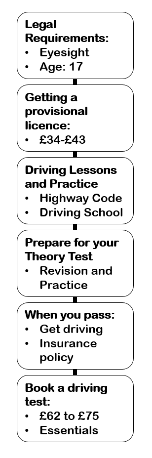

Learn to drive a car: step by step
Check what you need to do to learn to drive.
-
Step 1
Most people can start learning to drive when they’re 17.
-
Step 2
-
Step 3
You need a provisional driving licence to take lessons or practice.
-
and
-
Step 4
You need a provisional driving licence to book your theory test.
-
Step 5
You must pass your theory test before you can book your driving test.
-
Step 6
You can start driving as soon as you pass your driving test.
You must have an insurance policy that allows you to drive without supervision.
